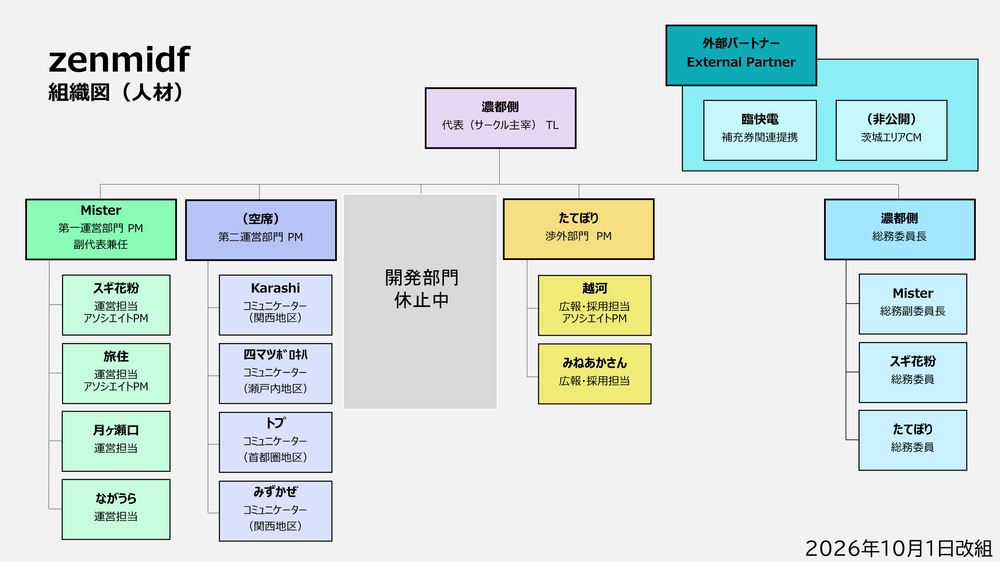

このサイトについて
ごあいさつ
いつも「全国マルス情報データファイル」をご利用いただき、誠にありがとうございます。 全国マルス情報データファイルは２０２４年８月のサービス開始から、２周年を迎えることができました。 より一層のサービス拡充と日本一のきっぷ収集ファンサイトを目指して活動してまいりますので、 これからも「zenmidf」をご愛用くださいますようお願い申し上げます。
zenmidf 運営チーム組織図

zenmidf メンバー
のとがわ
-
@_a17mas
最近は学園アイドルマスター（学マス）にお熱
| 出身地など | 埼玉県出身・在住（大分県生まれ） |
|---|---|
| 属性 | 大学生 |
| 参画 | 2024年8月 |
| 所属部門 | なし |
| 主な役職 | 代表（サークル主宰）TL |
| その他の役職 | 総務委員長 |
| エリア | 首都圏＋東九州北部 |
Mister
-
@Mister0124
zenmidfのメインギア
| 出身地など | 東京都在住（北海道出身） |
|---|---|
| 属性 | 社会人 |
| 参画 | 2025年1月 |
| 所属部門 | 第一運営部門 |
| 主な役職 | 副代表 |
| その他の役職 | 第一運営部門PM・総務副委員長 |
| エリア | 東日本全域＋北海道 |
スギ花粉
-
@7904_7804
期待の若手にして実力派
| 出身地など | 千葉県出身・在住 |
|---|---|
| 属性 | 学生 |
| 参画 | 2025年6月 |
| 所属部門 | 第一運営部門 |
| 主な役職 | 運営部門アソシエイトPM |
| その他の役職 | 総務委員 |
| エリア | 首都圏 |
たてぼり
-
@tatebori313
姉妹サイト・運賃計算システム「ふぁれす」管理人
| 出身地 | 非公開 |
|---|---|
| 属性 | 学生 |
| 参画 | 2025年8月 |
| 所属部門 | 渉外部門 |
| 主な役職 | 渉外部門PM |
| その他の役職 | 総務委員 |
| エリア | 首都圏 |
越河
-
@Rapid_Kosugoh
シャニマスＰ
| 出身地など | 青森県出身 |
|---|---|
| 属性 | 社会人 |
| 参画 | 2026年1月 |
| 所属部門 | 渉外部門 |
| 役職 | 広報・採用担当アソシエイトPM |
| エリア | 首都圏 |
旅住
-
@travelliveing
駅訪問エキスパート
| 出身地など | 福岡県出身・在住 |
|---|---|
| 属性 | 学生 |
| 参画 | 2026年2月 |
| 所属部門 | 第一運営部門 |
| 役職 | 運営担当アソシエイトPM |
| エリア | 北部九州 |
みねあかさん
-
@mineakasan
食も美味い・おんせん県おおいた
| 出身地など | 大分県出身・在住 |
|---|---|
| 属性 | 社会人 |
| 参画 | 2026年3月 |
| 所属部門 | 渉外部門 |
| 役職 | 広報・採用担当 |
| エリア | 九州全域 |
Karashi
- 非公開
大阪から空へ
| 出身地など | 大阪府在住 |
|---|---|
| 属性 | 学生 |
| 参画 | 2026年5月 |
| 所属部門 | 第二運営部門 |
| 役職 | コミュニケーター |
| エリア | 関西圏 |
四マツﾎﾞﾛｷﾊ
-
@YonMatsuBoro
幅広いきっぷ収集
| 出身地など | 愛媛県出身・在住 |
|---|---|
| 属性 | 学生 |
| 参画 | 2026年7月 |
| 所属部門 | 第二運営部門 |
| 役職 | コミュニケーター |
| エリア | 瀬戸内地域 |
トプ
-
@tb12003
記念すべき10人目
| 出身地など | 東京都在住 |
|---|---|
| 属性 | 社会人 |
| 参画 | 2026年8月 |
| 所属部門 | 第二運営部門 |
| 役職 | コミュニケーター |
| エリア | 首都圏 |
沿革
- ２０２４年
- ８月
- 「全国『みどりの窓口』データファイル」として発足。当初は「みどりの窓口」設置駅の情報のみを掲載。
- ９月
- 「AMV」タブを新設し、アシストマルス機能付きMV設置駅の掲載を開始。
- 「POS」タブも開設し、POS端末窓口設置駅の情報を追加。
- ２０２５年
- １月
- 「高機能券売機」タブを開設。EM20やHT50（赤）など、主要な高機能券売機設置駅の情報提供を拡充。
- ３月
- 「MV」タブを新設。アシストマルス機能なしのMV設置駅情報の掲載を開始。
- ５月
- ウェブサイトを開設。検索機能の提供を開始。
- ７月
- 「全国マルス情報データファイル」へ改称。
- MX-V10導入速報ページを開設。
- 駅別ページ「JR北海道」を開設。
- ８月
- 駅別ページ「JR九州」を開設。同時にトップページを一新。
- 駅別ページ「JR四国」を開設。
- ９月
- 駅別ページ「JR西日本」を開設。中国エリアを先行公開。
- １０月
- 駅別ページ「JR東日本」を開設。信越エリア・東北エリアを先行公開。
- １１月
- 駅別ページ「JR東海」を開設。中京エリアを先行公開。
- ２０２６年
- ４月
- 駅別ページ「JR西日本」北陸エリアを公開。
- ５月
- 駅別ページ「JR東日本」首都圏エリアを公開。これにより、「JR東日本」ページが完成。